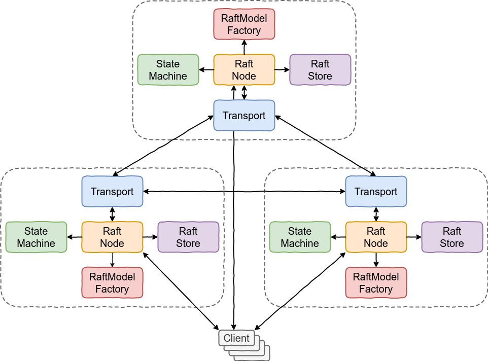

Introducing MicroRaft
The launch post for an embeddable Java Raft library. It explains where MicroRaft fits, which systems it is designed to power, and why a library approach matters for metadata, coordination, and control-plane workloads.
At a glance
- What MicroRaft is and where it fits
- Which CP use cases it is designed to power
- Which core abstractions you implement around the library
Disclaimer: MicroRaft is a project I develop in my free time. It is not affiliated, associated, endorsed by, or in any way officially connected with my current employer Facebook, or any of its subsidiaries or its affiliates.
I am pleased to announce the first public release of MicroRaft! MicroRaft is an open-source implementation of the Raft consensus algorithm in Java. You can use MicroRaft to build highly available and strongly consistent data, metadata and coordination services. The source code is available at GitHub with the Apache 2 License.
MicroRaft is a complete implementation of the Raft consensus algorithm. It implements the leader election, log replication, log compaction (snapshotting), and cluster membership change components. Additionally, it realizes a rich set of optimizations and enhancements to allow developers to run Raft clusters in a reliable and performant manner, and tune its behaviour based on their needs.
MicroRaft works on top of a minimalistic and modular design. It is a single lightweight JAR with a few hundred KBs of size and only a logging dependency. It contains an isolated implementation of the Raft consensus algorithm, and a set of accompanying interfaces to run the algorithm in a multi-threaded and distributed environment. These interfaces surround the Raft consensus algorithm, and abstract away the concerns of persistence, thread-safety, serialization, networking and actual state machine logic. Developers are required to implement these interfaces to build CP distributed systems on top of MicroRaft.
Use cases
You can use MicroRaft to build highly available and strongly consistent data, metadata and coordination services. Here are some common examples:
- distributed key-value store where each partition / shard is maintained by a separate Raft cluster
- control plane or coordination cluster
- leader election mechanisms
- group membership management systems
- distributed locks
- distributed transaction managers
- distributed resource schedulers
Main Abstractions
The following figure depicts MicroRaft's main abstractions. RaftNode runs the
Raft consensus algorithm with the Actor model. Clients talk to the leader
RaftNode in order to replicate their operations. They can talk to either the
leader or follower RaftNodes to run queries with different consistency
guarantees. RaftNode uses RaftModelFactory to create Raft log entries,
snapshot entries, and Raft RPC request and response objects. These objects are
defined under an interface, RaftModel, so that developers can implement them
using their favorite serialization framework, such as Protocol Buffers, Avro, or
Thrift. Each RaftNode talks to its own Transport object to communicate with
the other RaftNodes. For instance, if the RaftModel interfaces are
implemented with Protocol buffers, a Transport implementation can internally
use gRPC to communicate with the other RaftNodes. RaftNode also uses
RaftStore to persist Raft log entries and StateMachine snapshots to stable
storage. StateMachine enables users to implement arbitrary services, such as
an atomic register or a key-value store, and execute operations on them. If it
is a key-value store, then clients can replicate operations like get, set,
delete, etc. Once a log entry is committed, i.e, successfully replicated to
the majority of the Raft group, the operation it contains is passed to
StateMachine for execution and the leader RaftNode returns the output of the
execution to the client.

Getting started
Run the following command on your terminal for a sneak peek at MicroRaft. It starts a 3-node local Raft group (a Raft cluster in MicroRaft terms), elects a leader, and commits a number of operations.
$ ./gradlew :microraft-tutorial:test --tests io.microraft.tutorial.OperationCommitTest
Follow the tutorial to learn how to build an atomic register on top of MicroRaft and for full details, check out MicroRaft's main abstractions.
Ode to open source
I couldn't have brought MicroRaft into the daylight without the power of open source. MicroRaft originates from the Raft implementation that powers Hazelcast IMDG's CP Subsystem module. I was one of the main contributors of the CP Subsystem and was thinking about converting its Raft code into a separate library back in 2019, but didn't have the time to try my idea before leaving Hazelcast in February 2020. I decided to give this project a try to amuse myself during the lockdown while I was still in Turkey. After I relocated to London, I was too busy with everything related to starting a new life and a new job in a new country, so I needed a whole year to find some free time and make the project ready for release.
Mehmet Dogan and I developed the original Raft code inside Hazelcast codebase, but we isolated it from the rest of the Hazelcast code. It depends on Hazelcast for networking, logging and testing. So I started by moving out the Raft code and defining abstractions for the parts depending on Hazelcast. Then I implemented several significant enhancements and improvements that you can see at the commit history.
MicroRaft proudly carries on Hazelcast's open-source heritage and is released with the Apache 2 License.
What is next
I wrote down a list of future work on MicroRaft. I am planning to work on them in my free time. The list is tentative and there is nothing urgent at the moment.
MicroRaft is a new open source project. Any kind of contribution and feedback is welcome! The development happens on GitHub. Last, you can follow @MicroRaft on X / Twitter for announcements.
Read next